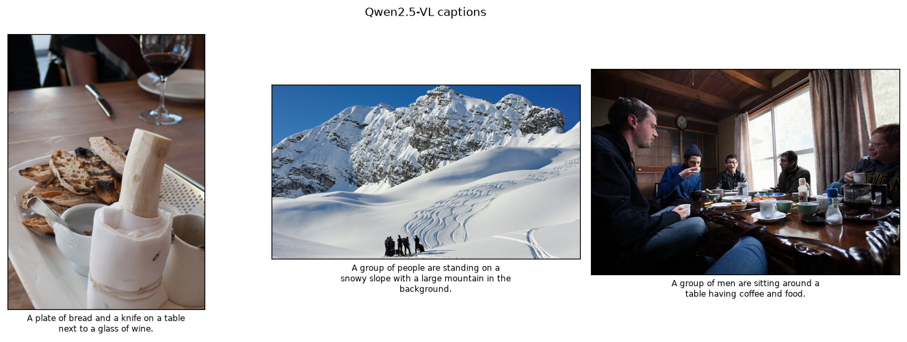

08 · Vision-language models
One model, many tasks — caption, reason, count, and read with Qwen2.5-VL
No prior knowledge needed — but this report is easier if you’ve skimmed Foundations (how a computer sees an image, what a model is, how we measure success). Stuck on a word? See the Glossary. Stuck on a model name? See Model families. Key terms are explained inline the first time they appear.
The task
Every earlier module solved one capability with a purpose-built model. A vision-language model (VLM) — a model that takes an image (and text) and produces text: captions, answers, reasoning — collapses many of them into a single network you steer with a prompt (the instruction or question you give the model in plain language). Ask it to caption, answer a question, count, read text, or reason about what happens next — no task-specific head, no retraining. This is the frontier of “general” computer vision and the closest thing here to understanding a scene rather than just labelling it.
How it works
A VLM bolts a vision encoder (the part that turns the image into tokens the language model can read) onto a large language model (LLM) — a model that generates text, like ChatGPT; a VLM simply attaches a vision encoder to one. Image patches are projected into the LLM’s token space — a token being a small chunk of text (or image) the model processes one at a time — so the model “sees” the picture as a sequence of tokens and then generates text conditioned on both the image and your question (generative means it produces free-form output, here text, rather than picking from a fixed list of classes). Because the output is language, the same model can do tasks that would each need a separate architecture in the classic stack — the prompt selects the behaviour. For how VLMs relate to the other model families in this curriculum, see Model families.
The natural pick here was Microsoft’s Florence-2, a tiny unified vision-language model that you steer with explicit task tokens (<CAPTION>, <OD>, <OCR>). Its custom modelling code doesn’t load under transformers v5 (a config incompatibility), so we use Qwen2.5-VL 3B — a small, transformers-native generative VLM (the “3B” means 3 billion parameters, the model’s adjustable internal numbers) — instead. The lesson (one model, many tasks via prompts) is the same; only the interface differs (free-form chat vs task tokens).
Results — real transcripts
Below is the model’s actual output on three images, for four different tasks, all from the same weights:
Qwen2.5-VL 3B — one model, many tasks
000000002431.jpg
- Caption — Describe this image in one sentence. > A plate of bread and a knife on a table next to a glass of wine.
- Reasoning — What is happening in this scene, and what might happen next? > In the image, there is a dining table with various items on it, including a plate of bread, a knife, a wine glass, and a cup. A person is present in the background, possibly enjoying a meal or preparing to eat. The scene suggests that someone is about to have a meal, which could involve eating the bread from the plate.
As for what might happen next, it’s difficult to predict with certainty since the image does not provide enough context. However, one possibility is that the person in the background might take a bite of the bread, drink some wine, and enjoy their meal. Alternatively, they might use the - Counting — How many people are in this image? Answer with just a number. > 0 - Reading (OCR) — Is there any readable text in this image? If yes, quote it; if no, say ‘none’. > none
000000003255.jpg
- Caption — Describe this image in one sentence. > A group of people are standing on a snowy slope with a large mountain in the background.
- Reasoning — What is happening in this scene, and what might happen next? > In the image, a group of people is standing on a snow-covered slope, possibly preparing for skiing or snowboarding. They are surrounded by a beautiful mountain landscape with snow-capped peaks and a clear blue sky. The group appears to be enjoying their time outdoors, taking in the stunning scenery.
As they stand there, they may decide to start their adventure by skiing or snowboarding down the slope. They could also engage in other winter activities such as building a snowman, having a picnic, or simply taking a leisurely walk through the snow. The group’s experience will likely be filled with excitement, fun, and the opportunity to connect - Counting — How many people are in this image? Answer with just a number. > 4 - Reading (OCR) — Is there any readable text in this image? If yes, quote it; if no, say ‘none’. > none
000000009590.jpg
- Caption — Describe this image in one sentence. > A group of men are sitting around a table having coffee and food.
- Reasoning — What is happening in this scene, and what might happen next? > In the image, a group of people is gathered around a dining table, enjoying a meal together. They are sitting on chairs and appear to be engaged in conversation while eating. The table is set with various dishes, cups, and utensils, indicating that they are having a meal.
Given the relaxed atmosphere and the presence of multiple people, it’s likely that the group has known each other for some time or is friends. They may continue to enjoy their meal and engage in more conversations as they eat. It’s possible that someone might share a story or joke, or they could discuss their day or plans for the future. Overall, the - Counting — How many people are in this image? Answer with just a number. > 5 - Reading (OCR) — Is there any readable text in this image? If yes, quote it; if no, say ‘none’. > none

Vision-language model
| Model | License | Latency (ms/answer, 32 tok) | Note |
|---|---|---|---|
| Qwen2.5-VL 3B | Apache-2.0 | 3729.64 | free-form text; qualitative |
One model answers caption/reason/count/OCR purely from the prompt — no task-specific heads. Latency is per short answer on NVIDIA GeForce RTX 3090 Ti | 24.0 GB | sm_86 | torch 2.11.0+cu128 / CUDA 12.8 and scales with the number of generated tokens. See the transcript for real outputs.
- One model, four capabilities. Captioning, open-ended reasoning, counting, and OCR all came from a single network — selected entirely by the prompt. That generality is the whole point of a VLM.
- Grounded and mostly correct. Counts (0 / 4 / 5 people) match the scenes; OCR (reading text that appears in an image) correctly reports “none” when there’s no text; captions are accurate. It reasons about what might happen next — something a classifier or detector simply cannot do.
- Generality has a price: latency. Latency is the time to produce an answer — here measured in seconds, far slower than the other modules. At ~3.7 s per short answer, this 3B VLM is ~100× slower than the YOLO detector. VLMs are the heavyweight of the curriculum — you reach for them when you need language-level flexibility, not real-time throughput.
- Confident but fallible. Free-form generation can hallucinate (confidently state details not actually in the image); outputs should be treated as strong suggestions, not ground truth.
Where VLMs fail
- Hallucination — fluent text can assert objects/attributes that aren’t there.
- Precise spatial / counting tasks — better than older models, still unreliable in clutter.
- Fine OCR & small text — general VLMs trail dedicated OCR systems on dense documents.
- Latency & cost — orders of magnitude heavier than the specialist models in modules 01–07.
Reproduce
uv sync --group dev
uv run python modules/08-vlm/run.py --images 3